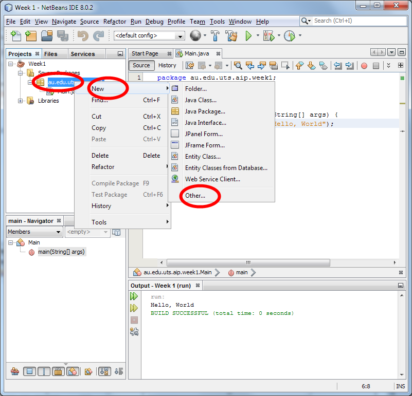

If have your own laptop or computer, then you may use this week to set up your environment.
You can use any IDE in this subject: NetBeans, Eclipse, IntelliJ or even a simple text editor. However, all of the weekly activities are based around NetBeans and your tutor may not be able to assist you if you get stuck with another IDE.
We will be using the Java Development Kit (JDK) version 8:
http://www.oracle.com/technetwork/java/javase/downloads/jdk8-downloads-2133151.html
We will be using the Java EE edition of NetBeans 8.1. When you install the Java EE edition, it will give you the option of installing the GlassFish 4.1.1 application server. Please make sure you select it, as GlassFish is the basis of much of this subject.
If you are using a lab computer, these have already been installed for you. Just log in to Red Hat Linux. You will find NetBeans in the "Programming" menu.
Create a Simple Java Program
For this exercise, you'll experience the basic steps in writing a Java program.
When you first start NetBeans, it should look something like this:
You can create a new project by clicking on the File menu, and selecting New Project...
Select Java application from the Java category and then click Next:
Enter the project name "Week1" (without the quotes) and the main class "au.edu.uts.aip.week1.Main" (again, without quotes):
You should have a window like this:
Delete the text in the window and replace it with this program:
package au.edu.uts.aip.week1;
public class Main {
public static void main(String[] args) {
System.out.println("Hello, World");
}
}
Click on the Run button:
In an ordinary Java program, the main method is run when Java starts.
So, this program will output to the console the text "Hello, World".
So, when you click on the run button, output of the program will be shown in an output window.
You can see that our Java program has output the text "Hello, World" (without the quotes) as we would expect.
Generating HTML
Outputting text to a console is not very interesting. Instead, let's try to generate some HTML.
First, we need a HTML viewer.
There's a Webkit-based web browser built into Java.
To use it, we need some code that will show a window.
Right click on the "au.edu.uts.aip.week1" package in the Project browser, and select New... Other...:

In the "Java" category, select the "Java Class" file type and then click Next:
Name the class MiniBrowser and click Finish:
You should have a new class in your package named MiniBrowser.java:
Delete the the code that is automatically created in MiniBrowser and copy-and-paste the following replacement code in its place (the code is very complex, but you don't have to worry about what it does):
package au.edu.uts.aip.week1;
import java.util.concurrent.*;
import javafx.application.*;
import javafx.beans.binding.*;
import javafx.scene.*;
import javafx.scene.web.*;
import javafx.stage.*;
/**
* A helper class that shows a JavaFX WebView in a window.
* HTML can be shown directly by the show method.
* A URL can be opened with the open method.
* <p>
* This class should only be called from the main thread.
*/
public class MiniBrowser extends Application {
private static final Semaphore semaphore = new Semaphore(0);
private volatile static Stage stage;
private static WebView browser;
/**
* Show HTML in a window.
* This method blocks until the user closes the window.
* @param html the HTML source of the web page to render
*/
public static void show(String html) {
System.out.println("Showing HTML: " + html);
startPlatform();
Platform.runLater(() -> {
browser.getEngine().loadContent(html);
stage.show();
});
semaphore.acquireUninterruptibly();
}
/**
* Open a URL in a window.
* This method blocks until the user closes the window.
* @param url the address of the web page to open
*/
public static void open(String url) {
System.out.println("Opening: " + url);
startPlatform();
Platform.runLater(() -> {
browser.getEngine().load(url);
stage.show();
});
semaphore.acquireUninterruptibly();
}
/**
* Starts the JavaFX platform.
* The current thread is blocked until JavaFX has started.
* When the current thread ends, this will be detected and JavaFX will be shut down.
*/
private static void startPlatform() {
if (stage == null) {
// Start JavaFX and wait for the HTMLViewer to start
new Thread(() -> Application.launch(MiniBrowser.class)).start();
semaphore.acquireUninterruptibly();
// Start a thread to monitor the Main thread, shutting down when main exits
final Thread main = Thread.currentThread();
new Thread(() -> {
try {
main.join();
} catch (InterruptedException ex) {
ex.printStackTrace();
}
Platform.exit();
}).start();
}
}
/**
* The JavaFX start method.
* Once called, the semaphore is released to notify the waiting thread that JavaFX is ready.
* @param stage
* @throws Exception
*/
@Override
public void start(Stage stage) throws Exception {
Platform.setImplicitExit(false);
MiniBrowser.stage = stage;
MiniBrowser.browser = new WebView();
// Bind the Window title to the web view's title (if present)
// or just "HTML Viewer" otherwise
StringExpression title = browser.getEngine().titleProperty();
StringExpression windowTitle = new When(title.isNull()).then("HTML Viewer").otherwise(title);
stage.titleProperty().bind(windowTitle);
stage.setScene(new Scene(browser));
// Notify the blocking thread when the window is closed
stage.setOnCloseRequest(e -> semaphore.release());
// Immediately notify listeners waiting for JavaFX to start
semaphore.release();
}
}
Again, the code is a bit complex.
However, you don't need to worry about how it works.
We will use it in a moment.
Now double-click on Main.java:
At this point we can use the MiniBrowser class that we created.
Replace the body of the main method with MiniBrowser.show("<h1>Hello, World</h1>");:
Finally, click run and you should have the following window appear:
Excellent! You're now able to run and write code in NetBeans.
If you are using the lab computers and you get an error in red text that says "Xlib: extension GLX missing on display :0.0", you can ignore it.
Now that you can get Java to show HTML, for the remainder of the activities, we will attempt to generate HTML code with Java.
Modifying the generated HTML:
Now, we'll make some changes to the body of the main method.
This means that you will be deleting the code that says MiniBrowser.show("<h1>Hello, World</h1>"), and replacing it with new code.
First, let's see that in Java, you can join two strings together by adding them. Enter this code into the main-method and click run to see what happens:
String part1 = "<html>";
String part2 = "<head><title>Greeting</title></head>";
String part3 = "<body><h1>Hello, World</h1><p>Pleased to meet you</p></body>";
String part4 = "</html>";
String everything = part1 + part2 + part3 + part4;
MiniBrowser.show(everything);
Ok! So the plus sign adds two (or more) strings together into one big string.
Next, try this code:
int count = 1;
String part1 = "<html><body><p>The current count is ";
String part2 = "</p></body></html>";
String everything = part1 + count + part2;
MiniBrowser.show(everything);
What happened?
Adding a number to a string causes the number to be converted into a String, and then the two strings are joined together.
Next try this code:
int count = 1;
String part1 = "<html><body><p>The current count is ";
String part2 = "</p></body></html>";
while (count < 5) {
String everything = part1 + count + part2;
MiniBrowser.show(everything);
count = count + 1;
}
What happened? Why?
Why did it only count from 1 to 4 (rather than counting to 5)?
What would happen if you were to move the String everything = part1 + count + part2; outside the while-loop:
int count = 1;
String part1 = "<html><body><p>The current count is ";
String part2 = "</p></body></html>";
String everything = part1 + count + part2;
while (count < 5) {
MiniBrowser.show(everything);
count = count + 1;
}
What happened? Why?
Generating larger pages
Read the following code and see if you can guess what it will output:
String result = "";
int[] squares = new int[10];
for (int i=0; i<10; i++) {
squares[i] = i * i;
}
for (int i=0; i<10; i++) {
String message = i + " squared is " + squares[i];
result = result + "<p>" + message + "</p>";
}
MiniBrowser.show(result);
Copy-and-paste it into NetBeans and see if you guessed correctly.
Problem 1
Can you write code with a for-loop that tests the 6 heading levels in HTML (i.e., <h1>,<h2>,<h3>,<h4>,<h5>,<h6>)?
Your output should look like this:
Problem 2
In HTML/CSS, colors can be expressed as a hash followed by 6 hexadecimal numbers (e.g., #88ff22).
Here is some code that generates a random hexadecimal number:
String color = "#";
for (int i=0; i<6; i++) {
int random = (int)(Math.random() * 16);
color = color + Integer.toHexString(random);
}
String before = "<div style=\"background-color:";
String after = "\">This has a random color</div>";
MiniBrowser.show(before+color+after);
Run it to see what it does.
Your challenge is to modify the code so that it outputs something that looks like this:
Hints: There are ten different colors. You should use another for-loop.